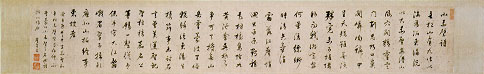
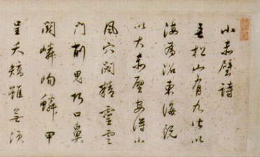

義助慰安婦 —— 李敖百件珍藏義賣藝術品（第2件） 品 名：A2. 董其昌「小赤壁詩」橫幅 預估價：360 萬 成交價：（保留） 說 明： 明朝東林黨得勢之時，有一著名藝術家董其昌，其影響力一直到現代藝術史。蘇東坡遊錯赤壁，其〈赤壁賦〉所寫並非三國戰場赤壁；而董其昌自言家鄉的赤壁風景則不下赤壁賦所描寫。此幅乃周之鳴先生轉讓，原由日本人收藏，此幅見於著錄、文集，互有異文，益見在修辭上的價值。 細部放大：
明朝東林黨得勢之時，有一著名藝術家董其昌，其影響力一直到現代藝術史。蘇東坡遊錯赤壁，其〈赤壁賦〉所寫並非三國戰場赤壁；而董其昌自言家鄉的赤壁風景則不下赤壁賦所描寫。此幅乃周之鳴先生轉讓，原由日本人收藏，此幅見於著錄、文集，互有異文，益見在修辭上的價值。
細部放大：